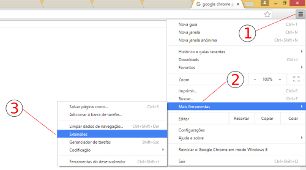
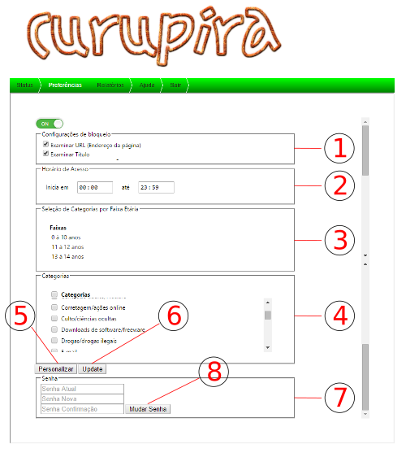

Para realizar a instalação antes é necessário adquirir o
arquivo comprimido do Curupira. O arquivo poderá ser obtido
pelo GitHub ou diretamente
pelo link.
https://github.com/apsb/curupira
De posse do arquivo comprimido, extraí-lo em uma pasta qualquer.
(Ex. c:\curupira).
Dentro do navegado, clicar em para abrir o gerenciador de extensões.

Fig1. - Gerenciador de Extenções
Clique no botão "Carregar Extensão Expandida ..." é selecione a pasta com os arquivos.
Login
Fig2. - Tela de Login
Para proteger o acesso as configurações e identificar o usuário foi desenvolvida uma tela para que o usuário possa digitar
uma senha, tornando o acesso as informações controlado. A senha padrão de acesso é "admin". Para utilizar basta digitar a senha
e clicar em "Login".
Status
Fig3. - Tela de Status
A tela de Status exibe informações sobre a quantidade de Categorias, Sites e Palavras existentes no banco de dados e
a data da última atualização.
Preferência

Fig4. - Tela de Preferências
A tela de Preferência possibilita modificar o estado de ativação da extensão, modificar as opções de pesquisa,
selecionar as categorias que devem ser bloqueadas, personalizar os sites e palavras a serem bloqueadas, selecionar
as categorias pela faixa etária e modificar a senha de acesso.
Configurações de bloqueio, permite escolher onde aplicar as regras de sites e palavras cadastradas.
Horário de acesso, configura a faixa de horário permitida para acesso a internet como um todo.
Seleção de Categorias por Faixa, permite selecionar as categorias usando um cadastro pré estabelecido de
Faixa Etária, selecionando automaticamente as categorias correspondentes.
Categorias, ao selecionar a categoria, informa que os sites e palavras dessa vinculados deverão ser
bloqueados pela extensão.
Botão Personalizar, exibe um formulário para cadastrar sites e palavras definidas pelo usuário.
Botão Update, recupera do servidor externo as atualizações de sites, categorias, palavras e faixas.
Senha, permite ao usuário modificar a senha atual.
Botão Mudar Senha, verifica a consistência das senhas e modifica a senha atual para a nova senha escolhida.
Relatório
Fig5. - Tela de Relatórios
A tela de Relatório permite visualizar os sites que foram acessados, indicando os sites bloqueados.
Filtro, Data Inicial, seleciona os sites acessados a partir dessa data.
Filtro, Data Final, seleciona os sites acessados até essa data estabelecida.
Botão Pesquisar, executa a pesquisa dos sites, conforme os parâmetros estabelecidos.
Ajuda
Esse documento que está sendo acessado. Exibe informações sobre a extensão e seus componentes